Local-first · MIT · Python 3.10–3.13
Every AI research tool generates. This one checks.
Drop in papers. Get a concept graph you can question, answers that cite the exact section they came from, and a read on your own draft before a reviewer sees it. On your machine, with the deterministic half running on no API key.
Four states, kept apart everywhere
CHECKED
Verified
A completed check established it. The only state that earns a tick.
HEURISTIC
Advisory
A model judged it. Useful, fallible, never presented as fact.
DEGRADED
Could not check
Attempted and could not finish. Not evidence of a problem.
NOT_APPLICABLE
Not applicable
Meaningless for this document. Nothing is outstanding.
Discovery
Getting papers in, whether you already have them or only have a question.
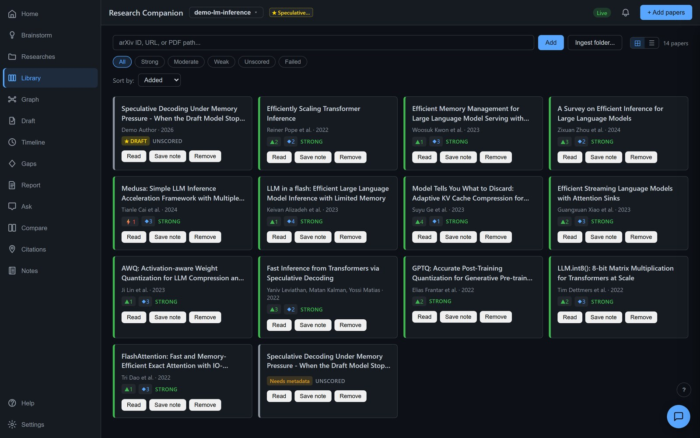
Papers arrive by arXiv ID, DOI, URL, or a folder of PDFs. Each card carries its evidence strength and how it stands against the paper you are writing. A scanned PDF that yields no text fails loudly rather than entering the library empty.
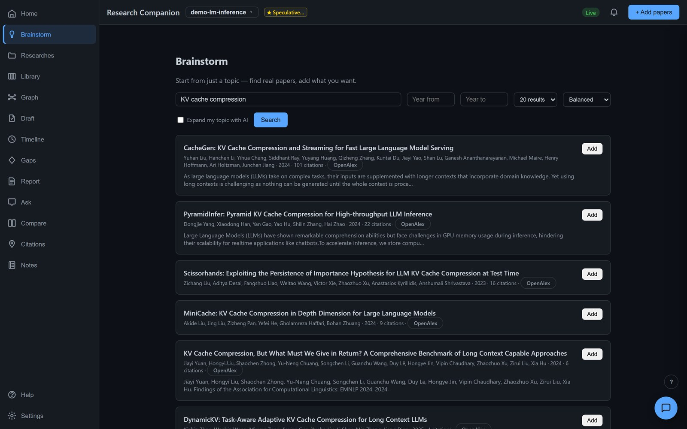
Start from a topic instead of a folder. Searches OpenAlex, Semantic Scholar, arXiv, Crossref and PubMed, and hands you the results to add one at a time. Nothing enters your library until you say so.
Understanding
What your corpus is actually made of, and what it can answer.
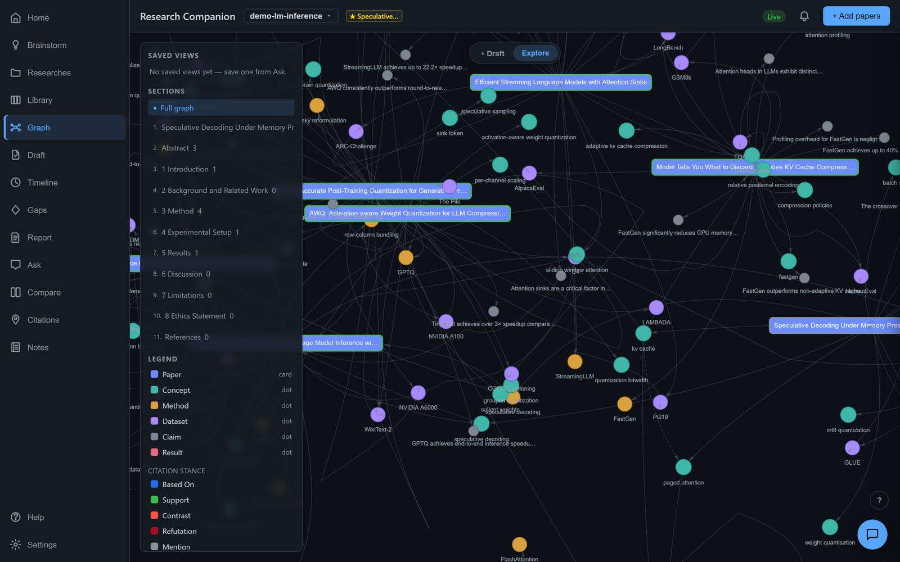
Not a citation network — a concept graph. Five papers using one method become one node linked to all five, so you see the shape of the corpus rather than a web of who cited whom.
What it will not claim: this is density within your library, not the field. Load six papers on one method and that method will look dominant.
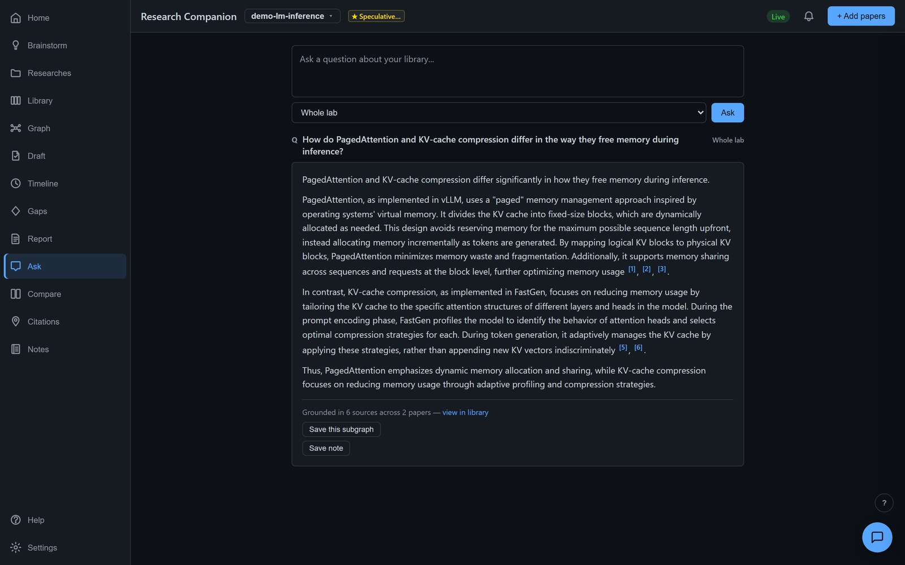
Plain language in, an answer out, with a citation after every claim down to the paper and section. Click a citation and the source opens at that passage. A quoted span that cannot be found verbatim is flagged, not quietly kept.
What it will not claim: if your library does not cover the question, it says so rather than guessing. That refusal is the feature.
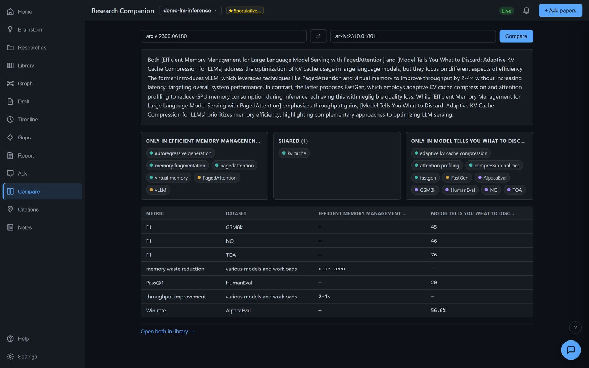
Two papers side by side: shared ground, unique contributions, and a table built from what each one actually reported. A dash is a real answer — that paper did not measure it. Numbers stay as published rather than being normalised into a false comparison.
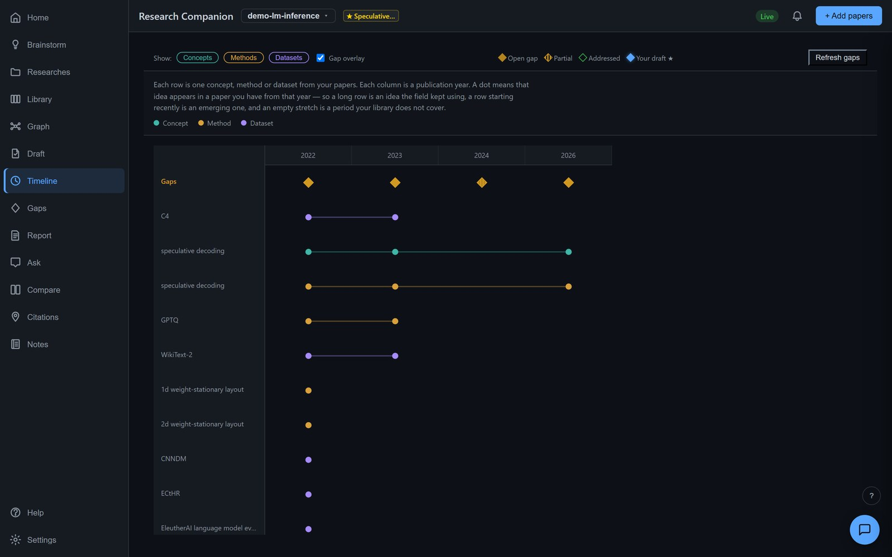
Every concept, method and dataset by the year it enters your corpus. A long row is an idea the field kept using; a row starting recently is an emerging one. Diamonds mark gaps the papers left open. Free — no model calls.
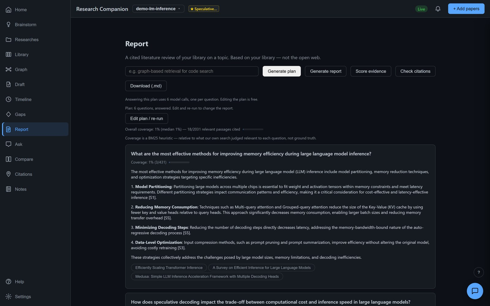
A topic becomes investigation questions you can edit before paying to answer them. Planning is one model call; answering is one per question, and the cost is stated before you click.
What it will not claim: the coverage figure is a keyword-search heuristic against what the tool's own search judged relevant — not ground truth, and labelled as such on screen.
Opportunity
What the literature admits is unfinished — and what you could do about it.
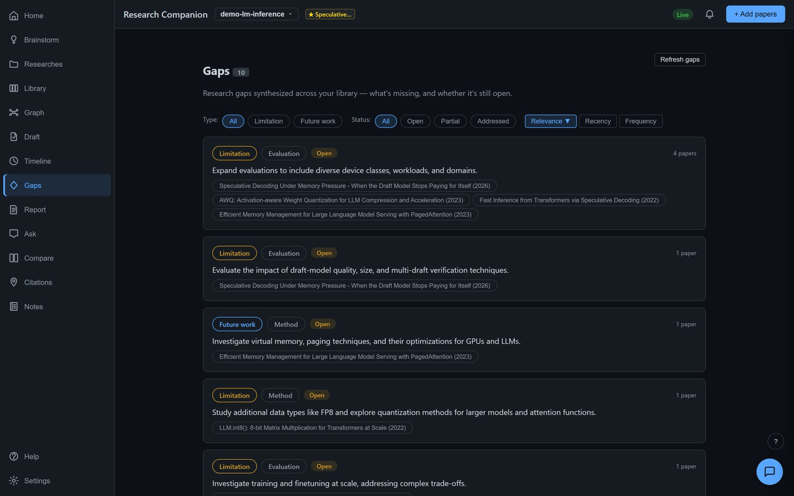
Every paper's own stated limitations and future work, gathered across the library and marked open, partial or addressed. Not the tool guessing where the gaps are — the authors saying so, with the quote to prove they did.
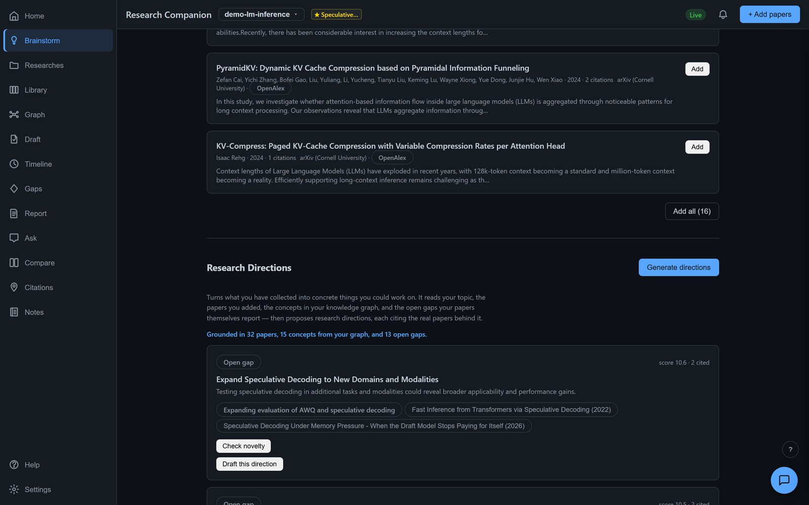
Turns what you collected into things you could work on, each citing the real papers and open gaps behind it. It states exactly how much it read to get there — papers, concepts, open gaps — so a proposal can be checked rather than trusted.
Development
Your draft, held against the literature while you write it.
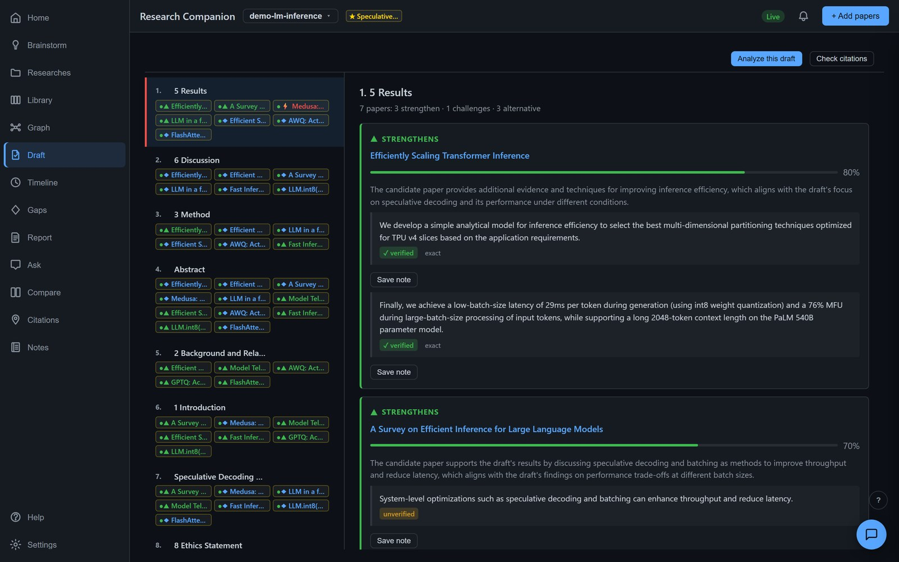
Every section of your draft checked against every paper: which strengthen it, which challenge it, which offer an alternative — each with the located quote behind the judgement, marked verified or unverified.
What it will not claim: a paper it has not read is not scored at all. A stance derived from a bare title would look identical to one built on a full text, so it refuses instead.
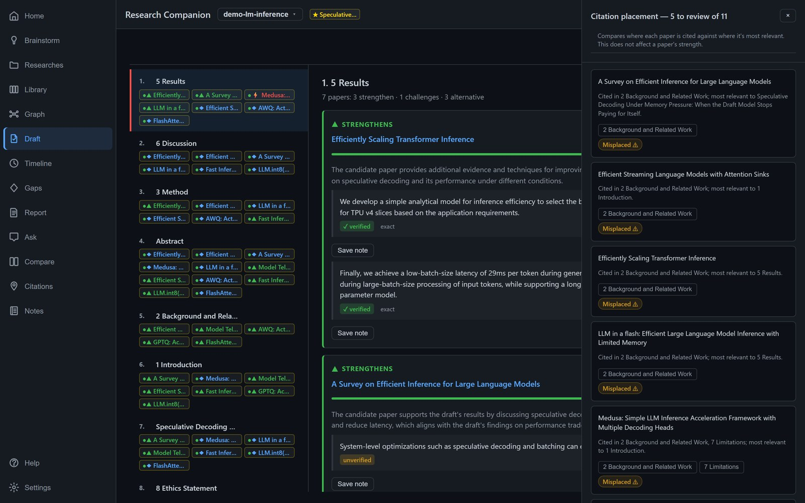
Not just whether you cited a work — where. Every reference matched against your library, and every in-text citation compared with the section it is most relevant to. Citing a paper in Related Work when it belongs in Results is what a reviewer notices and you do not.
Verification
The last step costs nothing at all — no API key, no model, no network beyond the public catalogues. Every reference looked up for real, every reported statistic recomputed, every venue rule checked.
$ research-companion refcheck <paper_id> OK [verified] Vaswani et al. Attention is all you need. NeurIPS OK [verified] Devlin et al. BERT: pre-training of deep bidirectional transformers XX [unverified] Zzyzx Q. Nonexistent. A paper that was never written anywhere. Summary: 39 verified, 0 suspect, 1 unverified (40 references) $ research-companion check-stats <paper_id> # do the numbers add up? $ research-companion check-compliance <paper_id> --venue neurips
A missing reference is never called fabricated. Zero statistics found is never reported as passed. An unreachable catalogue is never treated as evidence of absence. Those distinctions are enforced in the type system, not left to copy discipline.
Getting it
Runs on your machine.
Install
pip install -e ".[server]"
research-companion lab serve
The deterministic half — reference checking, statistic recomputation, venue compliance — needs no API key and no account.
As Claude Code skills
The same checks run as skills, so an agent can use them directly:
submission-check and refcheck.
Your data
Papers, graph, notes and drafts stay in a folder on your disk. Anything that costs money or sends data anywhere is opt-in, and the tool behaves identically when it is switched off.